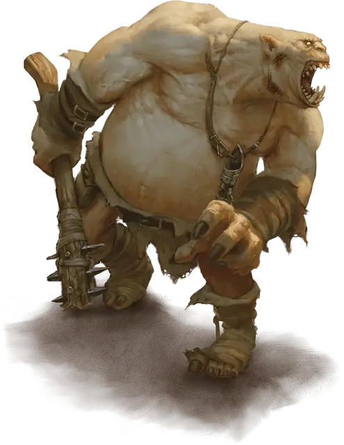

Огр
Ogre
Большой Великан, Хаотичный Злой

Класс Защиты 11 Инициатива −1 (9)
Хиты 68 (8к10 + 24)
Скорость 40 футов
| мод | спас | ||
|---|---|---|---|
| СИЛ | 19 | +4 | +4 |
| ЛОВ | 8 | −1 | −1 |
| ТЕЛ | 16 | +3 | +3 |
| мод | спас | ||
|---|---|---|---|
| ИНТ | 5 | −3 | −3 |
| МДР | 7 | −2 | −2 |
| ХАР | 7 | −2 | −2 |
Чувства Тёмное зрение 60 футов, пассивное Восприятие 8
Языки Общий, Великаний
Опасность 2 (450 опыта; БВ +2)
Действия
Палица. Бросок рукопашной атаки: +6, досягаемость 5 фт. Попадание: 13 (2к8 + 4) Дробящего урона.
Метательное копьё. Бросок рукопашной или дальнобойной атаки: +6, досягаемость 5 фт. или дистанция 30/120 фт. Попадание: 11 (2к6 + 4) Колющего урона.
Бонус мастерства +2
Среда обитания Арктика, Болота, Горы, Леса, Луга, Подземье, Пустыня, Холмы
Сокровища Оружейные
Огры
Яростные громилы и скопидомы
Огры — это эгоистичные грабители и исполинские обжоры, порождённые злобными сверхъестественными силами. Из мрачных руин и бесплодных окраин они совершают набеги на беззащитные поселения и устраивают засады на путников. Огры жадно алчут пищи и сокровищ, а также из злобы крушат произведения искусства, уничтожают книги, часовые механизмы и прочие хрупкие, созданные с любовью вещи. Порой они похищают жертв, чтобы съесть позднее, а изредка — приглянувшихся артистов, чтобы развлекаться.
Свои истоки огры ведут от гневливых божеств, таких как Эритнул, Такхизис и Вапрак. Они магическим образом восстают из земли тех мест, что были осквернены злыми богами, чёрной магией или древними проклятиями. Некоторые несут на себе следы породивших их земель: каменные мозоли, мшистые наросты или обмороженные шрамы.
Огры — трёхметровые громилы, которые сокрушают врагов грубой силой и забирают любую добычу, что пожелают. Огры-налётчики нередко вступают в союз с иными тёмными силами в обмен на еду, богатства и обещания драк.